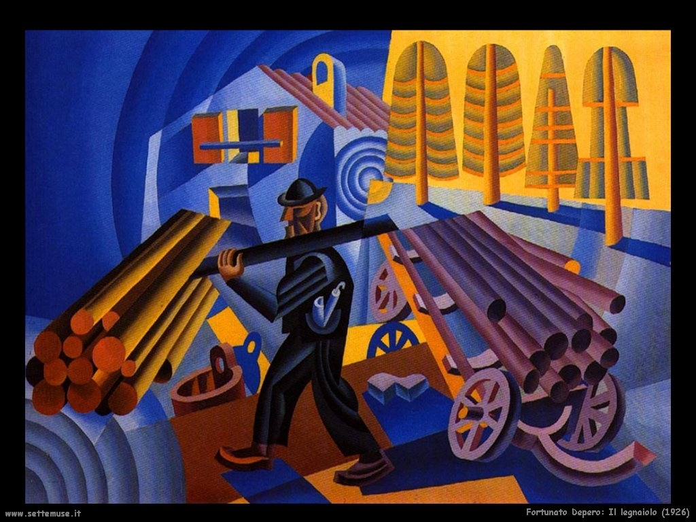
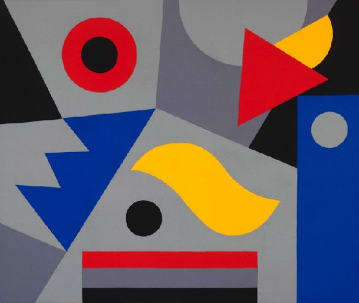
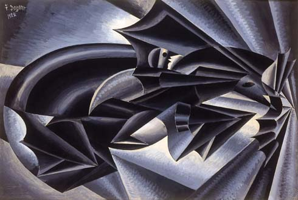
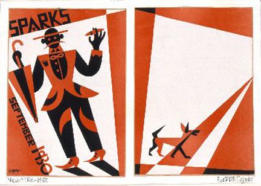
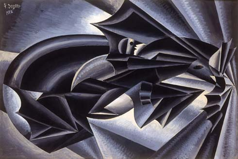
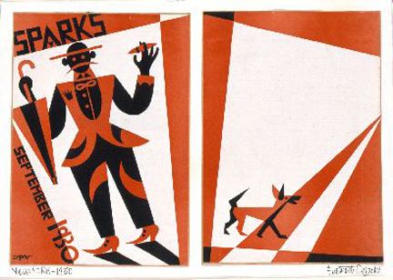
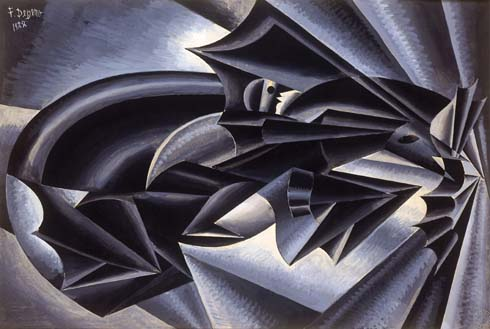
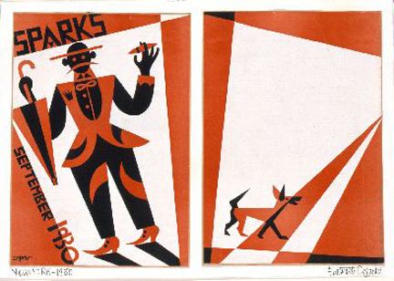
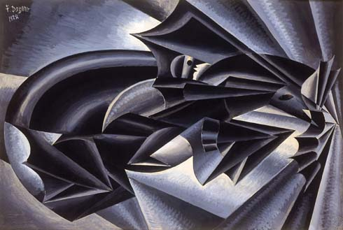
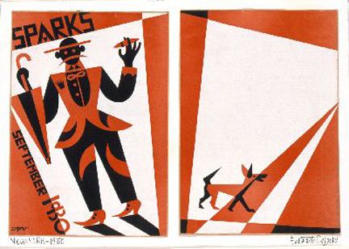

Itinerario Galleria "Casa d'Arte"
Qui di seguito troverai le opere da te selezionate per il tour!


 





Riepilogo
Il tuo itinerario personalizzato ha una durata di 1 ora circa, in base alle opere che hai scelto di vedere.
Visita un'altra galleria
Vuoi visitare un'altra galleria? Potrai trovare altre opere da aggiungere al tuo itinerario!
Se invece desideri continuare, premi il tasto "Concludi tour".
Itinerario Galleria "Casa d'Arte"
Qui di seguito troverai le opere da te selezionate per il tour!

